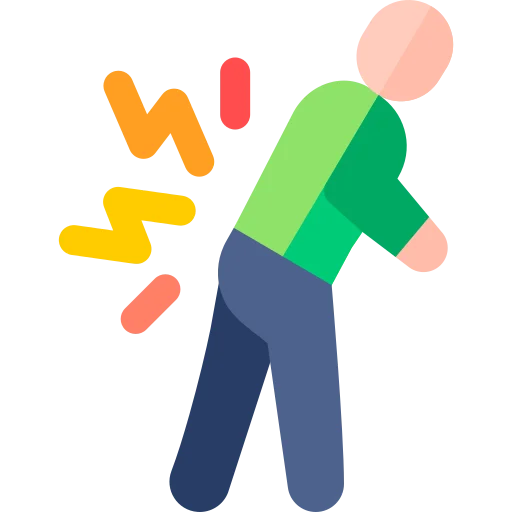

The sign that comes before respiratory depression, four ceilings that change what you give, and the one pain where a bigger dose is the wrong answer.
Pain management looks like a comfort topic. It is a safety topic wearing comfort clothing.
Almost nobody loses points on what morphine is. Points go here, in four predictable ways.
This is the single most important safety point in the topic. Sedation increases first. Respiratory depression follows it.
A rising sedation score is your warning. By the time the rate drops, the warning has already been ignored. Check how rousable the patient is before every dose, not just the number on the monitor.
A score of 7 does not name a dose. It names a starting point.
The dose depends on the patient in front of you. Age, renal function, opioid history, sedation level and what else they are taking all move it. Two patients reporting 7 can need very different plans.
Chronic pain does not raise the heart rate. The body adapts within days.
So a patient with a normal pulse, a normal pressure and no grimace can be in severe pain. Tolerance does the same thing. The textbook face is a picture of new acute pain, not of pain in general.
Pain that is out of proportion, unrelieved by opioids and worse on passive stretch is compartment syndrome until proven otherwise.
Medicating it away removes the only warning you had. This is the one time escalating the analgesic is the wrong answer. You assess and you notify.
Four classes carry this topic. For each one you should be able to say four things with the book closed.
What it is in a sentence. When you reach for it. What you monitor, or where the ceiling sits. And the teaching point.
If you cannot say all four out loud, you do not know it yet. Familiarity is not recall.
| Class | What it is | When you reach for it | Monitor or ceiling | Teaching point |
|---|---|---|---|---|
| Acetaminophen | A non-opioid analgesic and antipyretic with no anti-inflammatory effect. | Mild pain, and as the scheduled base under everything else. | Hard ceiling of 4 g per day in a healthy adult; far lower with liver disease. | Count every source. It hides inside combination opioids and cold remedies. |
| NSAIDs | Anti-inflammatory analgesics that block prostaglandin production. | Inflammatory, bone and post-operative pain. | Gastrointestinal bleeding, kidney function, platelet function, blood pressure. | Take with food. Report black stools, and any new swelling or falling urine output. |
| Opioids | Agonists at opioid receptors that dull the perception of pain. | Moderate to severe pain, acute or at the end of life. | Sedation level first, then respiratory rate. No dose ceiling for pure agonists. | Constipation never wears off. The bowel regimen starts with the first dose. |
| Adjuvants | Drugs whose main job is something else, used here for pain. | Neuropathic pain, and to spare opioid in any plan. | Sedation and dizziness. Gabapentin needs a renal dose adjustment. | Burning, shooting nerve pain answers to these, not to more opioid. |
Four rows on one index card, by hand. Acetaminophen has a ceiling. NSAIDs have organs to protect. Opioids have a sedation score. Adjuvants own nerve pain. That card is most of the exam.
Discrimination axis: can this patient tell you.
That one question picks the tool. Everything else follows from it.
Self-report is the standard. Not your observation, not the vital signs, not what the last shift wrote.
| Tool | Who it is for | How it works | Scale |
|---|---|---|---|
| Numeric rating scale | Verbal adults, and children 8 and over | Self-report | 0 to 10, where 0 is none and 10 is the worst imaginable |
| Wong-Baker FACES | Age 3 and up, including adults who struggle with a number line | Self-report | 0 to 10, across 6 faces. Say no hurt to hurts worst, not happy to sad |
| FLACC | Infants and nonverbal children, 2 months to 7 years | Behavioural observation | 0 to 10. Face, Legs, Activity, Cry, Consolability, each scored 0 to 2 |
| CPOT | Intubated or unconscious adults in intensive care | Behavioural observation | 0 to 8. Facial expression, body movement, muscle tension, ventilator compliance |
| Abbey | Patients with advanced dementia | Behavioural observation | 0 to 18, across vocalisation, expression, body language and physical change |
| PAINAD | Advanced dementia and nonverbal adults | Behavioural observation | 0 to 10, across breathing, vocalisation, facial expression, body language and consolability |
If a patient says 8 out of 10 while smiling and chatting, the answer is 8 out of 10. People cope with pain differently. Some go quiet, some laugh, some cry.
The behavioural tools are for patients who cannot report. They are not there to check up on patients who can.
Intubated, sedated, or too young. You still owe them an assessment.
Work through it in order, and document what you used.
The Q and the R do most of the diagnostic work here. Quality tells you which drug class to reach for.
Assessment without reassessment is not finished. After giving analgesia:
Those intervals match when each route peaks. Document the score before, the intervention, and the score after.
The target is usually not zero. Agree a comfort-function goal instead: the level at which they can breathe deeply, cough and walk.
Discrimination axis: has the body had time to adapt.
Goal: control it fast, and get them moving and breathing deeply.
Goal: function, not a zero. Multimodal and non-drug measures carry more of the load.
Time, and whether the vital signs still react. Acute pain still shouts through the sympathetic nervous system. Chronic pain has gone quiet without going away.
That is why normal vitals rule out nothing. A stem that gives you a calm patient with a score of 8 is testing exactly this.
Discrimination axis: intact nerves reporting damage, or damaged nerves misfiring.
This axis picks the drug. Get it wrong and you escalate an opioid that was never going to work.
Somatic. Bone, joint, muscle, skin. Sharp, aching, well localised. The patient points to it.
Visceral. Organs. Dull, cramping, squeezing, poorly localised. It refers to odd places.
Answers to: acetaminophen, NSAIDs and opioids.
Words to listen for. Burning, shooting, electric, tingling, pins and needles, numb and painful at once.
Where it comes from. Diabetic neuropathy, shingles pain that outlasts the rash, phantom limb pain, sciatica, chemotherapy.
Answers to: gabapentin or pregabalin, tricyclics such as amitriptyline, duloxetine. Opioids alone work poorly.
The adjective the patient chose. Aching, throbbing and cramping are nociceptive. Burning, shooting and electric are neuropathic.
When a stem hands you burning foot pain in a diabetic patient, the correct answer is an adjuvant. More opioid is the distractor.
Discrimination axis: which organ pays for this drug.
Non-opioids are not the weak option. They are the floor everything else stands on.
Both of them have a ceiling. That is the difference from an opioid, and it is what questions test.
It treats pain and fever. It does nothing for inflammation.
The liver is what pays. Overdose is the leading cause of acute liver failure in adults.
| Patient | Usual daily ceiling | Why it moves |
|---|---|---|
| Healthy adult | 4 g per day, and many facilities set 3 g | The margin between a therapeutic day and a toxic one is narrow |
| Liver disease | Lower, commonly 2 g per day or less | A damaged liver cannot clear the toxic metabolite |
| Chronic alcohol use | Lower, commonly 2 g per day or less | Alcohol depletes the glutathione that neutralises the metabolite |
| Frail older adult, low weight | Lower, and check the prescription | Less reserve, more drugs, thinner margin |
Most accidental overdoses are not one big dose. They are three ordinary sources added together.
Acetaminophen sits inside oxycodone and hydrocodone combination tablets. It sits inside over-the-counter cold and flu remedies and sleep aids. It sits inside the plain tablet the patient takes at home.
Before you give a combination opioid, add up the day's total. If the patient needs more opioid and is at the ceiling, the answer is a single-agent opioid, not another combination tablet.
The antidote is acetylcysteine, and it works best given early.
Ibuprofen, naproxen, ketorolac, aspirin. These work where there is inflammation.
They are excellent for bone pain, dental pain and post-operative pain. They also carry four risks worth memorising.
| Risk | What you watch for | Who is most exposed |
|---|---|---|
| Gastrointestinal | Epigastric pain, black tarry stools, coffee-ground vomit, falling hemoglobin | Older adults, steroid or anticoagulant users, prior ulcer |
| Renal | Falling urine output, rising creatinine, new edema | Dehydration, heart failure, existing kidney disease, ACE inhibitor plus diuretic |
| Bleeding | Bruising, prolonged oozing, bleeding at a surgical site | Anticoagulated patients, low platelets, anyone heading to surgery |
| Cardiovascular | Rising blood pressure, fluid retention, chest symptoms | Existing heart disease, hypertension, recent bypass surgery |
Ketorolac is a potent injectable NSAID and it is limited to 5 days total, by all routes combined.
Past that the bleeding and kidney risk climbs sharply. It is a short bridge, not a maintenance drug.
Pure opioid agonists have no ceiling dose. You titrate to effect and to side effects.
That freedom is exactly why the monitoring matters so much.
The standard against which the others are compared. Oral, IV, and long-acting forms.
Watch: active metabolites build up in kidney impairment. Histamine release causes itching and can drop the pressure.
Several times more potent than morphine milligram for milligram, so the numbers on the order look small.
Watch: a decimal point error here is a large error. Check the dose twice.
IV onset is almost immediate and the effect is brief, which suits procedures.
Watch: the patch is for stable chronic pain in opioid-tolerant patients only. Never for acute pain, never opioid-naive. Heat raises absorption, so no heating pads, and report fever.
Common for moderate to severe pain, alone or combined with acetaminophen.
Watch: the combination product is what caps the daily acetaminophen. Long-acting forms are swallowed whole, never crushed.
It is a prodrug, so how well it works depends on the patient's enzymes.
Watch: not given to children under 12, and not after tonsil or adenoid surgery. Ultra-rapid metabolisers have died from ordinary doses.
It breaks down into normeperidine, a neurotoxic metabolite that lowers the seizure threshold.
Watch: the metabolite accumulates in older adults and in kidney impairment. Reach for morphine or hydromorphone instead.
Naloxone does not reverse normeperidine, and a seizure is not a side effect you titrate around.
If a stem offers meperidine for repeated or severe pain, it is a distractor. This is true of sickle cell crisis in particular, where dosing is frequent and the metabolite piles up.
| Effect | Does tolerance develop | What you do |
|---|---|---|
| Constipation | No, never | Start a stimulant laxative with the first dose. Add fluid, fibre and movement |
| Sedation | Yes, over days | Score it every time. Treat a rising score as a warning, not a comfort |
| Respiratory depression | Yes, over days | Highest risk in the opioid-naive patient in the first 24 hours |
| Nausea and vomiting | Yes, usually within days | Antiemetic as prescribed. Do not abandon the opioid over it |
| Itching | Yes, usually | Often histamine, not allergy. Antihistamine, and reassess before labelling an allergy |
| Urinary retention | Yes, usually | Check for a distended bladder if output stops. Bladder scan |
| Orthostatic hypotension | Yes | Stand them slowly. Fall precautions, especially in older adults |
Every other opioid side effect fades. Constipation does not, at any dose, at any duration.
So it is prevented, not treated. A stimulant laxative goes on the chart the same day the opioid does, with fluid, fibre and movement alongside.
Waiting for the patient to report it is already too late. Ask about the last bowel movement on every shift.
Pain is easier to prevent than to chase. When pain is continuous and expected, scheduled dosing controls it with less total drug.
That is why a sickle cell vaso-occlusive crisis is treated with scheduled opioids rather than as-needed dosing. The same logic applies to the first day or two after major surgery, and to cancer pain.
As-needed dosing is for breakthrough pain on top of a scheduled base, not as the whole plan.
Discrimination axis: how rousable is this patient, right now.
If you remember one thing from this guide, remember the order.
Opioid-induced respiratory depression is almost never the first sign. Advancing sedation is.
The patient gets drowsy, then hard to rouse, then their breathing slows. Watching only the respiratory rate means you catch it at the last step instead of the first.
So the sedation level is assessed before every dose and at every check. It is the earliest warning you get.
Most facilities use a scored sedation scale beside the pain score. The letters differ; the actions do not.
| Level | What you see | What you do |
|---|---|---|
| S | Normal sleep, rouses easily | Acceptable. Continue as prescribed |
| 1 | Awake and alert | Acceptable. Continue as prescribed |
| 2 | Slightly drowsy, easily roused | Acceptable. Keep monitoring |
| POSS 3 | Frequently drowsy, arousable, drifts off during conversation | Not acceptable. Decrease the opioid dose 25 to 50 percent, notify the prescriber, monitor closely, add supplemental oxygen if indicated |
| POSS 4 | Somnolent, minimal or no response to verbal or physical stimulation | Emergency. Stop the opioid, stay with the patient, stimulate, call for help, give naloxone as prescribed |
Count a full minute, and count breaths rather than trusting the monitor.
Your facility sets the exact hold parameter. Know that it exists and look it up before your first shift.
Stack two or more of these and the monitoring gets tighter, not looser.
Naloxone displaces the opioid from its receptors. It works within minutes.
It does not do this selectively. That is the part students miss.
It also wears off faster than most opioids, commonly in 30 to 90 minutes. The opioid can outlast it and the patient can sedate again, so keep monitoring and expect that repeat doses may be needed.
Naloxone does nothing for benzodiazepine sedation. If the patient is on both, reversing the opioid does not fix all of it.
A PCA pump lets the patient give themselves a small preset dose by pressing a button.
The safety of the whole system rests on one fact. A patient too sedated to be safe is also too sedated to press.
Not the family. Not a visitor. Not you.
Pressing it for someone removes the only built-in safety the pump has. A sleeping patient does not need a dose; a sleeping patient is telling you they are comfortable, or that they are already sedated.
Teach this to the family on the first shift, in those words. A well-meaning relative pressing the button through the night is a real and documented cause of harm.
| Setting | What it means | Why it matters |
|---|---|---|
| Demand dose | The amount given each time the button works | Small by design, so no single press is dangerous |
| Lockout interval | The minimum time between delivered doses, typically 5 to 15 minutes for IV opioids | Presses inside the window are recorded but deliver nothing |
| Basal or continuous rate | A background infusion that runs whether or not they press | Raises the risk of respiratory depression, particularly in the opioid-naive |
| Hourly or four-hourly limit | A cap on total delivery in a set period | Backstop if the patient presses constantly |
| Loading dose | A one-off dose to get on top of the pain | Given by the nurse, not the pump, and reassessed |
They must be able to understand the concept and physically press the button. Confusion, low consciousness or a hand that cannot work the trigger all rule it out.
Children can use PCA well, usually from around 7 years old, once they can grasp the idea.
Naloxone and monitoring equipment stay available for anyone on one.
Discrimination axis: is this the body adapting, or the behaviour changing.
Three of these four are expected and harmless. One is a disease. Students blur them, and patients get undertreated for it.
The same dose does less over time, so more is needed for the same relief.
Physiologic and expected. It is not a warning sign, and it is not a reason to withhold.
Stopping abruptly, or giving an antagonist, produces withdrawal.
Physiologic and expected. The response is a taper, not a lecture.
Compulsive use and craving that continue despite harm. Use for something other than pain relief.
A disease, not a moral failing. Treat the pain and treat the disorder; both are real at once.
Clock-watching, requesting by name, appearing preoccupied with the next dose.
Caused by undertreatment. It resolves once the pain is actually controlled.
Ask one question. Is the behaviour aimed at relief, or at the drug.
Needing more, or withdrawing when it stops, is the body. Using despite harm, using for effect rather than relief, is the disorder.
And the separating test for pseudoaddiction is time. Treat the pain properly and watch. If the behaviour disappears, it was never addiction.
An adjuvant is a drug whose day job is something else. Used for pain, it does work an opioid cannot.
Multimodal means several mechanisms at once. Less of each drug, fewer side effects, better relief.
| Adjuvant | Examples | Best for | What you watch |
|---|---|---|---|
| Gabapentinoids | Gabapentin, pregabalin | Neuropathic pain of any cause | Sedation, dizziness, unsteadiness. Dose is reduced in kidney impairment |
| Tricyclic antidepressants | Amitriptyline, nortriptyline | Neuropathic pain, especially at night | Dry mouth, constipation, urinary retention, orthostatic drops. Relief takes weeks |
| SNRI antidepressants | Duloxetine | Diabetic neuropathy, fibromyalgia, chronic musculoskeletal pain | Nausea early, blood pressure, mood changes |
| Corticosteroids | Dexamethasone | Pain from swelling, nerve compression, bone metastases | Glucose, infection risk, mood, fluid |
| Local anesthetics | Lidocaine patch, nerve blocks, epidural | Localised pain, and after surgery | Numbness, weakness, the block wearing off unnoticed |
| Muscle relaxants | Cyclobenzaprine, baclofen | Muscle spasm alongside the pain | Sedation, falls. It adds to opioid sedation |
Pain is generated in several places at once. One drug can only block one of them.
Scheduled acetaminophen plus an NSAID plus a regional block means the opioid has less to do. Less opioid means less sedation, less constipation and less risk.
When a stem asks how to reduce opioid requirement after surgery, the answer is almost always another modality, not a smaller opioid dose on its own.
These lower the pain, they rarely remove it. Offering distraction instead of a prescribed analgesic is not an acceptable answer.
The drugs do not change. What changes is the margin you have to work in.
The trap: undertreated pain causes delirium too. Withholding is not the safe option.
The trap: a quiet, still child may be guarding, not comfortable. Involve the parent.
The trap: reading tolerance as addiction and cutting the dose. That is the classic wrong answer.
The trap: withholding out of fear of hastening death.
Giving enough opioid to relieve severe pain at the end of life is ethically and professionally right.
The intent is relief. A dose titrated to comfort in a dying patient is appropriate care, not a hastened death, and worrying about it is not a reason to leave someone in pain.
If a question offers you an answer that withholds comfort from a dying patient over that fear, it is the distractor.
Priority questions hand you four reasonable actions and ask which comes first. All four are things a nurse would do.
That is the trick. You are being tested on ordering, not on correctness.
Pain out of proportion to the injury, unrelieved by opioids, and worse on passive stretch of the muscles. In a limb, that is compartment syndrome.
Do not medicate it harder. Assess the limb, loosen anything constricting, keep it level with the heart rather than elevated, and notify immediately.
The same principle runs wider. Escalating opioid for pain that is escalating for a new reason hides the reason.
These should be automatic. If you have to reason toward one of them, it is not learned yet.
| Number | Meaning |
|---|---|
| 4 g per day | Acetaminophen ceiling in a healthy adult; many facilities set 3 g |
| 2 g per day or less | Acetaminophen ceiling with liver disease, chronic alcohol use or frailty |
| 45 to 60, then 15 to 30 minutes | Reassess pain after an oral dose, and after an IV dose |
| Sedation level 3 | Drifting off mid-sentence. Hold or reduce the dose and notify |
| POSS 4 | Minimal or no response to physical stimulation. Stop the opioid, call for help, naloxone as prescribed |
| Under 12 breaths per minute | Hold the next dose and reassess. A convention, not a physiologic threshold; read it with the sedation score |
| Under 8 breaths per minute | With an unrousable patient, this is naloxone territory |
| 30 to 90 minutes | How long naloxone lasts, so keep watching for the sedation to return |
| 5 to 15 minutes | Usual PCA lockout interval for an IV opioid |
| 5 days | Maximum total ketorolac duration, all routes combined |
| Under 12 years | Age below which codeine is not given |
| 2 months to 7 years | FLACC range for infants and nonverbal children |
| Beyond 3 months | Duration at which pain is treated as chronic, so expect normal vital signs |
| Day one of the opioid | When the bowel regimen starts, not when constipation appears |
Fourteen rows. Put them on the back of the index card from section 02. Test yourself on the action, not the number; a stem gives you the number and asks what you do.
Reading this again will not move your score. Producing it will. Everything below is done with the page shut.
Pick any of the four analgesic classes. Without looking, say what it is, when you reach for it, what you monitor or where the ceiling sits, and the teaching point.
Then do it for the other three. If you can, you are ready. If you cannot, you know which section to reopen.
Questions with full rationales covering pain assessment tools, acetaminophen and NSAID ceilings, opioid safety, PCA rules and special populations. Choose Practice Mode for instant feedback or Exam Mode to simulate test conditions.
Sedation first = it rises before the respiratory rate falls
Self-report = the standard, whatever the vital signs show
Acetaminophen = 4 g per day in a healthy adult, far less with liver disease
Burning or shooting = neuropathic, so reach for an adjuvant
PCA = only the patient presses the button
Constipation = the one effect tolerance never fixes